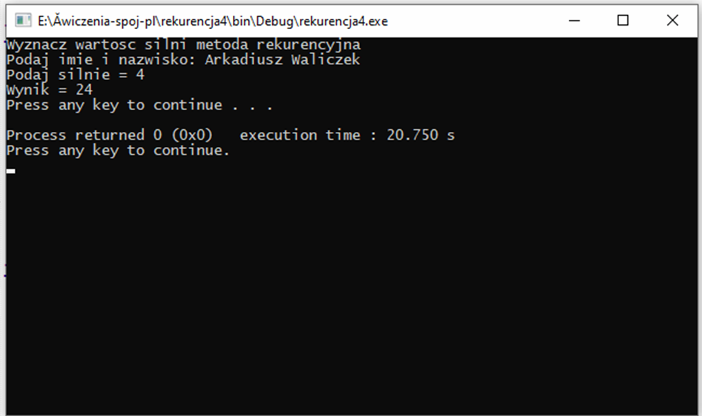

Rekurencja - Wprowadzenie
1. Celem ćwiczenia jest zapoznanie się z tematem: "Programowanie w języku c++ - REKURENCJA"
2. Zanim rozpoczniesz wykonywanie poniższych ćwiczeń, koniecznie obejrzyj darmowy kurs Pana Mirosława Zelenta, który omawia czym jest rekurencja, bez obejrzenia filmu, jeśli nie spotkałeś się wcześniej z terminem "REKURENCJI" możesz napotkać trudność w rozumieniu implementacji kodu poniższych zadań. Poniżej zamieszczam link do youtube
3. Zadania prześlij za pomocą poczty e-mail wraz ze screenami wykonanych programów
4. Screeny działających programów w konsoli np.

5. Uwaga nie przesyłamy całego projektu tylko pliki cpp. np. main.cpp (suma.cpp), main.cpp (silnia.cpp) itd. plus oczywiście screeny ;)